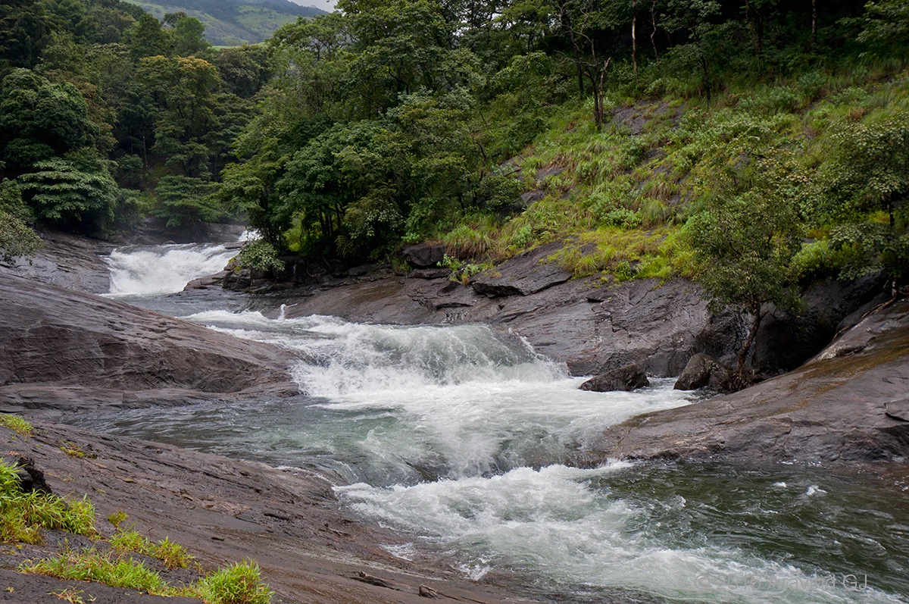
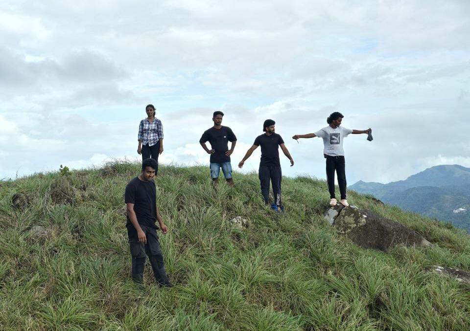
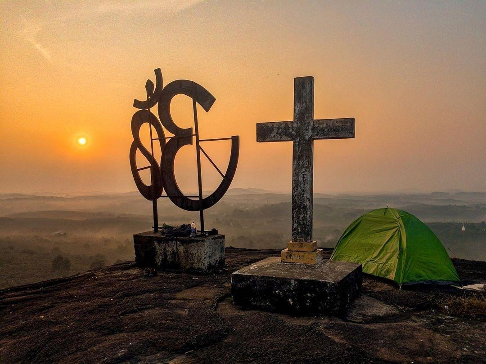

KOZHIPPARA WATERFALLS
Falls also known as Kakkadampoyil Falls is a waterfalls in the Malappuram district in Kerala, India. ... It is located in Kakkadampoyil near the Silent ...

KURISHUMALA
A must-see destination in Kakkadampoyil village. Walk to the top at Foggy is adorable. Misty at after-rain times. Best spots in Malappuram Dt.

OMKURISHU PAARA
Kurishu Paara is a mountain located in Edivanna village around 15 km from Nilambur in Malappuram district of Kerala.